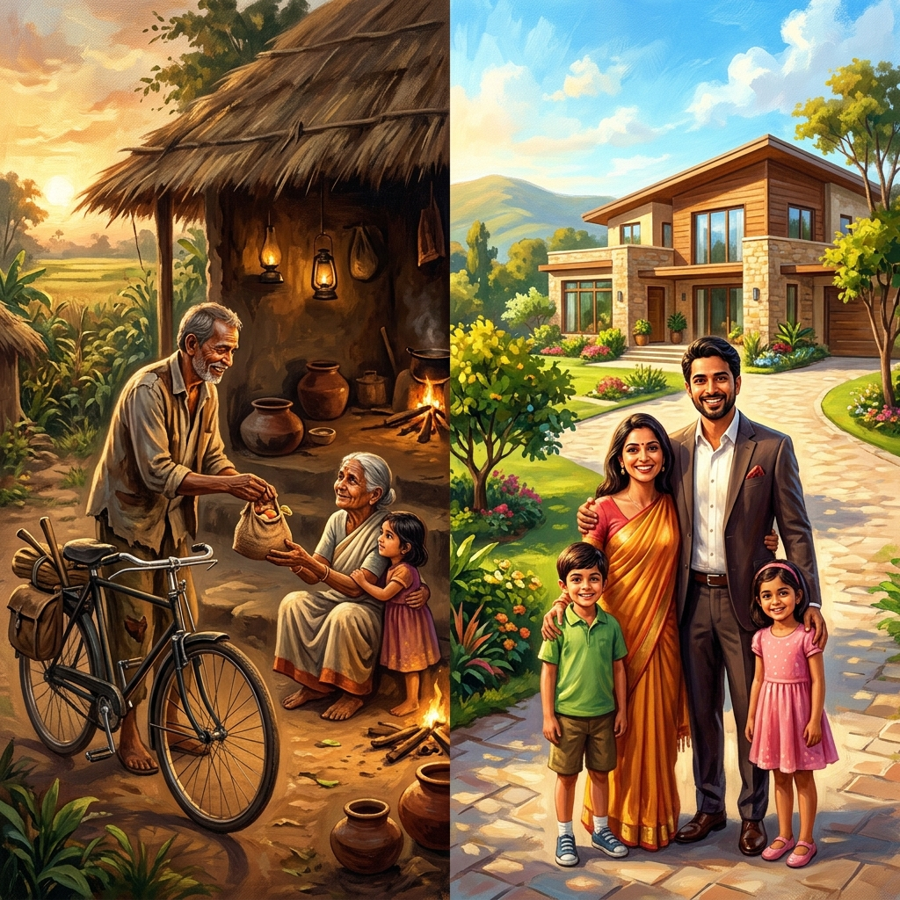
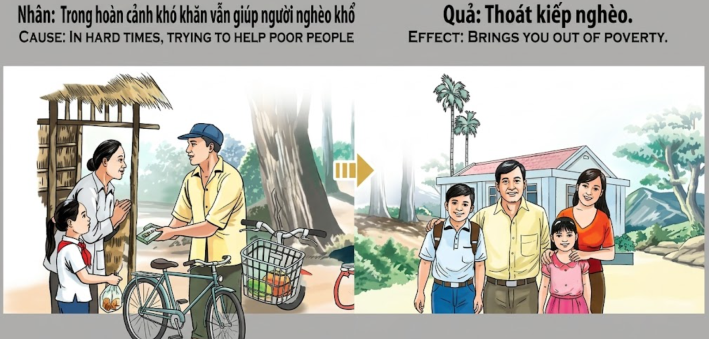

Dar desde la EscasezGiving from ScarcityDare dalla Scarsità在匮乏中奉献العطاء من العوزДаяние в нуждеGeben aus dem MangelDonner depuis la pénurie欠乏の中での施しDar a partir da EscassezSẻ Chia Trong Nghèo Khó
Quien ayuda a los demás incluso cuando él mismo padece carencias, rompe las cadenas de la pobreza kármica y renace en una vida de abundancia y prosperidad duradera.He who helps others even when he himself suffers from scarcity, breaks the chains of karmic poverty and is reborn into a life of abundance and lasting prosperity.Chi aiuta gli altri anche quando egli stesso soffre di carenze, spezza le catene della povertà karmica e rinasce in una vita di abbondanza e prosperità duratura.即使在自己匮乏时仍能帮助他人的人，打破了业力贫困的枷锁，重生在富足和持久繁荣的生活中。من يساعد الآخرين حتى عندما يعاني هو نفسه من العوز، يكسر أغلال الفقر الكارمي ويولد من جديد في حياة من الوفرة والازدهار الدائم.Тот, кто помогает другим, даже когда сам страдает от нужды, разрывает цепи кармической бедности и возрождается для жизни в изобилии и прочном процветании.Wer anderen hilft, auch wenn er selbst unter Mangel leidet, bricht die Ketten der karmischen Armut und wird in ein Leben in Fülle und dauerhaftem Wohlstand wiedergeboren.Celui qui aide les autres alors qu'il souffre lui-même de pénurie brise les chaînes de la pauvreté karmique et renaît dans une vie d'abondance et de prospérité durable.自らも欠乏に苦しみながら他者を助ける者は、カルマの貧困の連鎖を断ち切り、豊かさと永続的な繁栄の人生に生まれ変わります。Aquele que ajuda os outros mesmo quando ele próprio sofre de escassez, quebra as correntes da pobreza cármica e renasce numa vida de abundância e prosperidade duradoura.Kẻ nào vẫn sẵn lòng giúp đỡ người khác ngay cả khi bản thân đang sống trong cảnh túng quẫn, kẻ đó đã bẻ gãy xiềng xích của nghiệp nghèo khó và sẽ tái sinh trong một cuộc đời sung túc, thịnh vượng bền lâu.
La generosidad no se mide por lo que sobra, sino por lo que se comparte cuando apenas se tiene lo necesario. En los momentos de mayor dificultad, el alma humana se enfrenta a su prueba más rigurosa: el egoísmo de la supervivencia o la nobleza del sacrificio. Ayudar a un semejante cuando el propio estómago está vacío es un acto que resuena con una fuerza incalculable en el tejido del universo.
El karma no es un contador de monedas, sino un observador de la intención y el desprendimiento. Al dar desde la escasez, estamos afirmando nuestra confianza en la abundancia del espíritu y negándonos a ser esclavos del miedo. Este gesto heroico purifica el rastro de deudas pasadas y planta semillas de riqueza que ninguna crisis podrá arrancar. La pobreza es a menudo un estado mental que se cura con la entrega hacia los demás.
Al renacer, estas almas regresan bajo cielos de prosperidad. La lucha por lo básico, que antes era su sombra constante, ha desaparecido. Encuentran oportunidades donde otros ven obstáculos y sus manos parecen atraer la abundancia de forma natural. No es suerte, es la cosecha de aquel pan compartido en la tormenta. Quien supo ser rico en el corazón siendo pobre en bienes, se convierte en el legítimo heredero de la riqueza del mundo.
Generosity is not measured by what is left over, but by what is shared when one barely has what is necessary. In moments of greatest difficulty, the human soul faces its most rigorous test: the selfishness of survival or the nobility of sacrifice. Helping a fellow human when one's own stomach is empty is an act that resonates with incalculable force in the fabric of the universe.
Karma is not a coin counter, but an observer of intention and detachment. By giving from scarcity, we are affirming our trust in the abundance of the spirit and refusing to be slaves to fear. This heroic gesture purifies the trace of past debts and plants seeds of wealth that no crisis can uproot. Poverty is often a state of mind that is cured by giving to others.
Upon rebirth, these souls return under skies of prosperity. The struggle for the basics, which was once their constant shadow, has disappeared. They find opportunities where others see obstacles, and their hands seem to attract abundance naturally. It is not luck; it is the harvest of that bread shared in the storm. He who knew how to be rich in the heart while being poor in goods becomes the legitimate heir to the world's wealth.
La generosità non si misura da ciò que avanza, ma da ciò que si condivide quando si ha appena lo stretto necessario. Nei momenti di maggiore difficoltà, l'anima umana affronta la sua prova più rigorosa: l'egoismo della sopravvivenza o la nobiltà del sacrificio. Aiutare un simile quando il proprio stomaco è vuoto è un atto che risuona con una forza incalcolabile nel tessuto dell'universo.
Il karma non è un contatore di monete, ma un osservatore dell'intenzione e del distacco. Dando dalla scarsità, affermiamo la nostra fiducia nell'abbondanza dello spirito e rifiutiamo di essere schiavi della paura. Questo gesto eroico purifica la traccia dei debiti passati e pianta semi di ricchezza che nessuna crisi potrà sradicare. La povertà è spesso uno stato mentale che si cura con la dedizione verso gli altri.
Rinascono, e queste anime tornano sotto cieli di prosperità. La lotta per i beni di prima necessità, che un tempo era la loro ombra costante, è scomparsa. Trovano opportunità dove altri vedono ostacoli e le loro mani sembrano attirare l'abbondanza in modo naturale. Non è fortuna, è il raccolto di quel pane condiviso nella tempesta. Chi ha saputo essere ricco nel cuore essendo povero di beni, diventa il legittimo erede della ricchezza del mondo.
慷慨不是由剩余的东西来衡量的，而是在仅有生活必需品时所分享的东西。在最困难的时刻，人类的灵魂面临着最严峻的考验：生存的自私还是牺牲的高尚。在自己饥肠辘辘时帮助同胞，这种行为在宇宙的结构中产生不可估量的力量共鸣。
因果不是硬币计数器，而是意图和执着的观察者。通过在匮乏中奉献，我们肯定了我们对精神富足的信任，并拒绝成为恐惧的奴隶。这种英勇的行为净化了过去债务的痕迹，种下了任何危机都无法拔除的财富种子。贫困通常是一种心态，可以通过向他人施舍来治愈。
重生后，这些灵魂在繁荣的天空下回归。曾经是他们挥之不去的阴影、为基本生存而进行的斗争已经消失。他们在别人看到障碍的地方发现机会，他们的手似乎自然地吸引着财富。这不是运气；这是在风暴中分享的那块面包的收获。那些在物质贫乏时懂得知足常乐的人，成为了世界财富的合法继承人。
لا تقاس الكرم بما يفيض، بل بما يتم مشاركته عندما لا يملك المرء سوى الضروري. في لحظات الصعوبة القصوى، تواجه الروح البشرية اختبارها الأكثر صرامة: أنانية البقاء أو نبل التضحية. إن مساعدة زميل إنسان عندما تكون معدتك خاوية هو فعل يتردد صداه بقوة لا تقدر في نسيج الكون.
الكارما ليس عداداً للعملات، بل هو مراقب للنية والتخلي. من خلال العطاء من العوز، نؤكد ثقتنا في وفرة الروح ونرفض أن نكون عبيداً للخوف. هذه اللفتة البطولية تطهر أثر الديون الماضية وتزرع بذور الثروة التي لا يمكن لأي أزمة اقتلاعها. الفقر غالباً ما يكون حالة ذهنية تُشفى من خلال العطاء للآخرين.
عند الولادة من جديد، تعود هذه الأرواح تحت سماوات الأزدهار. فلقد اختفى الكفاح من أجل الضروريات، الذي كان يوماً ظله الملازم. يجدون فرصاً حيث يرى الآخرون عقبات، وتبدو أيديهم تجذب الوفرة بشكل طبيعي. ليس هذا حظاً، بل هو حصاد ذلك الخبز الذي تم تقاسمه في العاصفة. من عرف كيف يكون غنياً في القلب وهو فقير في المتاع، يصبح الوريث الشرعي لثروة العالم.
Щедрость измеряется не излишками, а тем, чем человек делится, когда у него едва хватает необходимого. В моменты величайших трудностей человеческая душа проходит самое суровое испытание: эгоизм выживания или благородство жертвенности. Помощь ближнему, когда собственный желудок пуст, — это поступок, который резонирует с неисчислимой силой в ткани Вселенной.
Карма — это не счетчик монет, а наблюдатель за намерениями и непривязанностью. Давая в нужде, мы подтверждаем нашу веру в изобилие духа и отказываемся быть рабами страха. Этот героический жест очищает след прошлых долгов и сажает семена богатства, которые не сможет вырвать никакой кризис. Бедность часто является состоянием ума, которое лечится отдачей себя другим.
Возрождаясь, эти души возвращаются под небеса процветания. Борьба за самое необходимое, которая когда-то была их постоянной тенью, исчезла. Они находят возможности там, где другие видят препятствия, а их руки, кажется, естественным образом притягивают изобилие. Это не удача, это жатва того хлеба, разделенного в бурю. Тот, кто умел быть богатым сердцем, будучи бедным имуществом, становится законным наследником богатства мира.
Großzügigkeit misst sich nicht an dem, was übrig bleibt, sondern an dem, was geteilt wird, wenn man kaum das Notwendige hat. In Momenten größter Schwierigkeit steht die menschliche Seele vor ihrer strengsten Prüfung: dem Egoismus des Überlebens oder dem Adel des Opfers. Einem Mitmenschen zu helfen, wenn der eigene Magen leer ist, ist eine Tat, die mit unschätzbarer Kraft im Gefüge des Universums nachhallt.
Das Karma ist kein Münzzähler, sondern ein Beobachter von Absicht und Loslassen. Indem wir aus dem Mangel geben, bekräftigen wir unser Vertrauen in die Fülle des Geistes und weigern uns, Sklaven der Angst zu sein. Diese heroische Geste reinigt die Spur vergangener Schulden und pflanzt Samen des Reichtums, die keine Krise entwurzeln kann. Armut ist oft ein Geisteszustand, der durch die Hingabe an andere geheilt wird.
Bei der Wiedergeburt kehren diese Seelen unter einem Himmel des Wohlstands zurück. Der Kampf um das Existenzminimum, der einst ihr ständiger Schatten war, ist verschwunden. Sie finden Möglichkeiten, wo andere Hindernisse sehen, und ihre Hände scheinen den Überfluss auf natürliche Weise anzuziehen. Es ist kein Glück; es ist die Ernte jenes Brotes, das im Sturm geteilt wurde. Wer wusste, wie man im Herzen reich ist, während man an Gütern arm war, wird zum rechtmäßigen Erben des Reichtums der Welt.
La générosité ne se mesure pas à ce qui reste, mais à ce qui est partagé quand on a à peine le nécessaire. Dans les moments de plus grande difficulté, l'âme humaine fait face à son épreuve la plus rigoureuse : l'égoïsme de la survie ou la noblesse du sacrifice. Aider son prochain alors que son propre estomac est vide est un acte qui résonne avec une force incalculable dans le tissu de l'univers.
Le karma n'est pas un compteur de pièces, mais un observateur de l'intention et du détachement. En donnant depuis la pénurie, nous affirmons notre confiance en l'abondance de l'esprit et refusons d'être esclaves de la peur. Ce geste héroïque purifie la trace des dettes passées et plante des graines de richesse que nulle crise ne pourra déraciner. La pauvreté est souvent un état d'esprit qui se guérit par le don de soi aux autres.
En renaissant, ces âmes reviennent sous des cieux de prospérité. La lutte pour le nécessaire, qui était autrefois leur ombre constante, a disparu. Elles trouvent des opportunités là où d'autres voient des obstacles et leurs mains semblent attirer l'abondance naturellement. Ce n'est pas de la chance, c'est la moisson de ce pain partagé dans la tempête. Celui qui a su être riche de cœur tout en étant pauvre en biens devient l'héritier légitime de la richesse du monde.
寛大さは余ったものではなく、必需品すらほとんどないときに何を分かち合うかで測られます。最大の困難の瞬間に、人間の魂は最も厳格な試練に直面します。生存のエゴイズムか、犠牲の高潔さか。自らの胃袋が空のときに仲間に手を差し伸べることは、宇宙の仕組みの中で計り知れない力を持って響き渡る行為です。
カルマはコインカウンターではなく、意図と執着のなさの観察者です。欠乏の中から与えることで、私たちは精神の豊かさを信頼し、恐怖の奴隷になることを拒否しているのです。この英雄的なジェスチャーは過去の負債の跡を浄化し、いかなる危機も根こそぎにできない富の種をまきます。貧困はしばしば、他人に与えることで癒される心の状態なのです。
生まれ変わると、これらの魂は繁栄の空の下に戻ってきます。かつて彼らの絶え間ない影であった、生活必需品のための闘いは消え去りました。彼らは他者が障害を見る場所に機会を見出し、その手は自然に豊かさを引き寄せるようです。それは運ではありません。嵐の中で分かち合われたあのパンの収穫なのです。持ち物は貧しくても心は豊かである方法を知っていた者は、世界の富の正当な相続人となります。
A generosidade não se mede pelo que sobra, mas pelo que se partilha quando mal se tem o necessário. Nos momentos de maior dificuldade, a alma humana enfrenta a sua prova mais rigorosa: o egoísmo da sobrevivência ou a nobreza do sacrifício. Ajudar um semelhante quando o próprio estômago está vazio é um ato que ressoa com uma força incalculável no tecido do universo.
O karma não é um contador de moedas, mas um observador da intenção e do desapego. Ao dar a partir da escassez, estamos a afirmar a nossa confiança na abundância do espírito e a recusar ser escravos do medo. Este gesto heróico purifica o rastro de dívidas passadas e planta sementes de riqueza que nenhuma crise poderá arrancar. A pobreza é muitas vezes um estado mental que se cura com a entrega aos outros.
Ao renascer, estas almas regressam sob céus de prosperidade. A luta pelo básico, que antes era a sua sombra constante, desapareceu. Encontram oportunidades onde outros veem obstáculos e as suas mãos parecem atrair a abundância de forma natural. Não é sorte, é a colheita daquele pão partilhado na tempestade. Quem soube ser rico no coração sendo pobre em bens, torna-se o herdeiro legítimo da riqueza do mundo.
Lòng hào phóng không được đo bằng những gì dư thừa, mà bằng những gì được sẻ chia khi bản thân chỉ vừa đủ những nhu cầu tối thiểu. Trong những khoảnh khắc khó khăn nhất, tâm hồn con người phải đối mặt với thử thách khắc nghiệt nhất: sự ích kỷ của bản năng sinh tồn hay sự cao thượng của lòng hy sinh. Giúp đỡ một đồng loại khi bụng mình vẫn còn đói là một hành động vang dội với sức mạnh khôn lường trong mạng lưới nhân quả của vũ trụ.
Nhân quả không phải là một chiếc máy đếm tiền, mà là một vị quan sát tâm ý và sự buông xả. Khi sẻ chia từ trong sự thiếu thốn, chúng ta đang khẳng định niềm tin vào sự giàu có của tâm hồn và từ chối trở thành nô lệ của nỗi sợ hãi. Cử chỉ anh hùng này thanh lọc những dấu vết nợ nần trong quá khứ và gieo những hạt giống giàu sang mà không cuộc khủng hoảng nào có thể nhổ bật rễ. Nghèo khó thường là một trạng thái tâm trí, và nó sẽ được chữa lành bằng việc biết cho đi.
Khi tái sinh, những linh hồn này trở lại dưới bầu trời của sự thịnh vượng. Cuộc vật lộn vì những nhu cầu cơ bản, vốn từng là cái bóng đeo bám họ, nay đã biến mất. Họ tìm thấy cơ hội ở những nơi người khác chỉ thấy trở ngại, và đôi bàn tay họ như có sức hút tự nhiên đối với sự sung túc. Đó không phải là may mắn, mà là vụ thu hoạch từ mẩu bánh được sẻ chia giữa cơn bão tố. Kẻ nào biết làm giàu tâm hồn khi còn nghèo khó vật chất, kẻ đó sẽ trở thành người thừa kế chính đáng của sự giàu sang trên thế gian này.
El Mendigo del Ciclo de Oro
The Beggar of the Golden Cycle
Il Mendicante del Ciclo d'Oro
黄金循环的乞丐
متسول الدورة الذهبية
Нищий золотого цикла
Der Bettler des Goldenen Zyklus
Le mendiant du cycle d'or
黄金サイクルの乞食
O Mendigo do Ciclo de Ouro
Người Ăn Xin Trong Vòng Quay Vàng
En una ciudad devastada por la guerra, un hombre llamado Binh vivía de lo que encontraba en los escombros. Un día, tras encontrar una pequeña bolsa de granos de arroz, vio a una madre con un niño enfermo que no habían comido en tres días. Sin dudarlo, Binh les entregó toda la bolsa, diciendo: 'Mi hambre es vieja y la conozco, la de ellos es joven y me duele'. Pasó la noche bajo la lluvia, sintiendo una extraña paz a pesar de su debilidad.
Binh murió antes de ver el fin de la guerra, pero su renacimiento fue glorioso. Regresó como el hijo de un exitoso comerciante en una era de paz. Desde muy joven, Binh mostró un talento natural para los negocios, pero su verdadera fortuna era su generosidad. Nunca olvidó el valor de un grano de arroz y fundó graneros públicos que alimentaron a miles durante las sequías. Su riqueza crecía con cada acto de entrega, como si el universo estuviera ansioso por devolverle el favor multiplicado.
Llegó a una vejez rodeado de lujo, pero conservaba la humildad del hombre que una vez durmió en las ruinas. Se decía que sus manos estaban bendecidas: cada vez que daba, el doble regresaba a él antes de que terminara el día. En su lecho de muerte, les dijo a sus herederos: 'La verdadera pobreza no es no tener nada, sino no tener nada que dar. Yo fui más rico cuando compartí mi arroz bajo la lluvia que ahora que tengo oro en los cofres'.
In a city devastated by war, a man named Binh lived on what he found in the rubble. One day, after finding a small bag of rice grains, he saw a mother with a sick child who had not eaten in three days. Without hesitation, Binh gave them the entire bag, saying: 'My hunger is old and I know it; theirs is young and it hurts me'. He spent the night in the rain, feeling a strange peace despite his weakness.
Binh died before seeing the end of the war, but his rebirth was glorious. He returned as the son of a successful merchant in an era of peace. From a very young age, Binh showed a natural talent for business, but his true fortune was his generosity. He never forgot the value of a grain of rice and founded public granaries that fed thousands during droughts. His wealth grew with every act of giving, as if the universe were eager to return the favor multiplied.
He reached an old age surrounded by luxury, but he kept the humility of the man who once slept in the ruins. It was said that his hands were blessed: every time he gave, double returned to him before the day was over. On his deathbed, he told his heirs: 'True poverty is not having nothing, but having nothing to give. I was richer when I shared my rice in the rain than now that I have gold in the chests'.
In una città devastata dalla guerra, un uomo di nome Binh viveva di ciò que trovava tra le macerie. Un giorno, dopo aver trovato un piccolo sacchetto di chicchi di riso, vide una madre con un bambino malato che non mangiavano da tre giorni. Senza esitazione, Binh diede loro l'intero sacchetto, dicendo: 'La mia fame è vecchia e la conosco, la loro è giovane e mi fa male'. Passò la notte sotto la pioggia, sentendo una strana pace nonostante la sua debolezza.
Binh morì prima di vedere la fine della guerra, ma la sua rinascita fu gloriosa. Tornò come figlio di un mercante di successo in un'era di pace. Fin da giovanissimo, Binh mostrò un talento naturale per gli affari, ma la sua vera fortuna era la sua generosità. Non dimenticò mai il valore di un chicco di riso e fondò granai pubblici che sfamarono migliaia di persone durante le siccità. La sua ricchezza cresceva con ogni atto di dedizione, come se l'universo fosse ansioso di restituirgli il favore moltiplicato.
Raggiunse la vecchiaia circondato dal lusso, ma mantenne l'umiltà dell'uomo che un tempo dormiva tra le rovine. Si diceva che le sue mani fossero benedette: ogni volta que dava, riceveva il doppio prima della fine della giornata. Sul letto di morte, disse ai suoi eredi: 'La vera povertà non è non avere nulla, ma non avere nulla da dare. Ero più ricco quando condividevo il mio riso sotto la pioggia che ora che ho l'oro negli forzieri'.
在一座被战争蹂躏的城市里，一个名叫 Binh 的男人靠在废墟中捡拾的东西生活。一天，他发现了一小袋米粒后，看到一位母亲带着已经三天没吃饭的病重孩子。Binh 毫不犹豫地把整袋米给了他们，说：‘我的饥饿是老毛病了，我习惯了；他们的饥饿还年轻，这让我心痛。’ 他在雨中度过了夜晚，尽管身体虚弱，却感受到一种奇妙的平静。
Binh 在战争结束前去世，但他的重生是辉煌的。他以一个和平年代成功商人儿子的身份回归。Binh 打小就表现出非凡的经商天赋，但他真正的财富是他的慷慨。他从未忘记一粒米的价值，并建立了公共粮仓，在旱灾期间养活了数千人。他的财富随着每一次的施舍而增长，仿佛宇宙渴望加倍偿还他的恩情。
他在奢华中度过晚年，但仍保持着那个曾在废墟中睡觉的人的谦卑。据说他的双手受到了祝福：每当他给予，双倍的回报总会在一天结束前回到他身边。在弥留之际，他告诉继承人：‘真正的贫穷不是一无所有，而是无所给予。我在雨中分享大米时比现在金库里装满黄金时更富有。’
في مدينة دمرتها الحرب، عاش رجل يدعى بينه على ما يجده في الأنقاض. ذات يوم، بعد العثور على حقيبة صغيرة من حبيبات الأرز، رأى أماً مع طفل مريض لم يأكلا منذ ثلاثة أيام. دون تردد، أعطاهم بينه الحقيبة بأكملها، قائلاً: 'جوعي قديم وأعرفه، وجوعهم فتي ويؤلمني'. قضى الليل تحت المطر، وهو يشعر بسلام غريب رغم ضعفه.
مات بينه قبل أن يرى نهاية الحرب، لكن ولادته من جديد كانت مجيدة. عاد كابن لتاجر ناجح في حقبة من السلام. منذ سن مبكرة، أظهر بينه موهبة طبيعية في التجارة، لكن ثروته الحقيقية كانت كرمه. لم ينس قط قيمة حبة أرز وأسس صوامع عامة أطعمت الآلاف خلال فترات الجفاف. كانت ثروته تنمو مع كل فعل عطاء، وكأن الكون كان حريصاً على رد الجميل له مضاعفاً.
وصل إلى سن الشيخوخة محاطاً بالترف، لكنه حافظ على تواضع الرجل الذي نام ذات يوم في الأنقاض. قيل إن يديه كانتا مباركتين: في كل مرة يعطي فيها، كان يعود إليه الضعف قبل نهاية اليوم. وهو على فراش الموت، قال لورثته: 'الفقر الحقيقي ليس ألا تملك شيئاً، بل ألا تملك شيئاً تعطيه. لقد كنت أغنى عندما تقاسمت أرزي تحت المطر مما أنا عليه الآن والذهب في صناديقي'.
В городе, опустошенном войной, человек по имени Бинь жил тем, что находил в руинах. Однажды, найдя небольшой мешочек рисовых зерен, он увидел мать с больным ребенком, которые не ели три дня. Без колебаний Бинь отдал им весь мешочек, сказав: «Мой голод старый, и я его знаю, а их голод — молодой, и он причиняет мне боль». Он провел ночь под дождем, чувствуя странный покой, несмотря на свою слабость.
Бинь умер, не дождавшись конца войны, но его возрождение было славным. Он вернулся сыном преуспевающего купца в эпоху мира. С самого раннего возраста Бинь проявлял природный талант к бизнесу, но его истинным достоянием была щедрость. Он никогда не забывал цену рисового зернышка и основал общественные амбары, которые кормили тысячи людей во время засух. Его богатство росло с каждым актом дарения, как будто Вселенная стремилась вернуть ему долг в многократном размере.
Он дожил до глубокой старости в роскоши, но сохранил скромность человека, когда-то спавшего в руинах. Говорили, что его руки благословлены: каждый раз, когда он давал, двойная сумма возвращалась к нему до конца дня. На смертном одре он сказал своим наследникам: «Настоящая бедность — это не когда у тебя ничего нет, а когда тебе нечего дать. Я был богаче, когда делился рисом под дождем, чем теперь, когда у меня в сундуках золото».
In einer vom Krieg verwüsteten Stadt lebte ein Mann namens Binh von dem, was er in den Trümmern fand. Eines Tages, nachdem er eine kleine Tüte mit Reiskörnern gefunden hatte, sah er eine Mutter mit einem kranken Kind, die seit drei Tagen nichts gegessen hatten. Ohne zu zögern, gab Binh ihnen die ganze Tüte und sagte: 'Mein Hunger ist alt und ich kenne ihn, der ihre ist jung und tut mir weh.' Er verbrachte die Nacht im Regen und spürte trotz seiner Schwäche einen seltsamen Frieden.
Binh starb, bevor er das Ende des Krieges sah, aber seine Wiedergeburt war glorreich. Er kehrte als Sohn eines erfolgreichen Kaufmanns in einer Ära des Friedens zurück. Schon in jungen Jahren zeigte Binh ein natürliches Talent für Geschäfte, aber sein wahres Vermögen war seine Großzügigkeit. Er vergaß nie den Wert eines Reiskorns und gründete öffentliche Speicher, die während Dürren Tausende speisten. Sein Reichtum wuchs mit jedem Akt der Hingabe, als ob das Universum bestrebt wäre, ihm die Gunst vervielfacht zurückzugeben.
Er erreichte ein hohes Alter inmitten von Luxus, bewahrte sich aber die Bescheidenheit des Mannes, der einst in den Trümmern schlief. Es hieß, seine Hände seien gesegnet: Jedes Mal, wenn er gab, kam das Doppelte zu ihm zurück, bevor der Tag zu Ende war. Auf seinem Sterbebett sagte er seinen Erben: 'Wahre Armut ist nicht, nichts zu besitzen, sondern nichts geben zu können. Ich war reicher, als ich meinen Reis im Regen teilte, als jetzt, wo ich Gold in den Truhen habe'.
Dans une ville dévastée par la guerre, un homme nommé Binh vivait de ce qu'il trouvait dans les décombres. Un jour, après avoir trouvé un petit sac de grains de riz, il vit une mère avec un enfant malade qui n'avaient pas mangé depuis trois jours. Sans hésiter, Binh leur donna tout le sac, en disant : 'Ma faim est vieille et je la connais, la leur est jeune et me fait mal'. Il passa la nuit sous la pluie, ressentant une étrange paix malgré sa faiblesse.
Binh mourut avant de voir la fin de la guerre, mais sa renaissance fut glorieuse. Il revint comme le fils d'un riche marchand dans une ère de paix. Dès son plus jeune âge, Binh montra un talent naturel pour les affaires, mais sa véritable fortune était sa générosité. Il n'oublia jamais la valeur d'un grain de riz et fonda des greniers publics qui nourrirent des milliers de personnes pendant les sécheresses. Sa richesse augmentait à chaque acte de don, comme si l'univers avait hâte de lui rendre la pareille au centuple.
Il atteignit une vieillesse entourée de luxe, mais conservait l'humilité de l'homme qui avait autrefois dormi dans les ruines. On disait que ses mains étaient bénies : chaque fois qu'il donnait, le double lui revenait avant la fin de la journée. Sur son lit de mort, il dit à ses héritiers : 'La véritable pauvreté n'est pas de ne rien avoir, mais de n'avoir rien à donner. J'étais plus riche quand je partageais mon riz sous la pluie que maintenant que j'ai de l'or dans mes coffres'.
戦争で荒廃した都市で、ビンという男は瓦礫の中から見つけたもので食いつないでいました。ある日、少量の米粒が入った袋を見つけた後、3日間何も食べていない病気の子供を連れた母親を見かけました。ビンはためらうことなく、袋を丸ごと渡し、「私の空腹は古く、慣れています。彼らの空腹は若く、私の心を痛めます」と言いました。彼は弱りながらも、雨の中で不思議な安らぎを感じて夜を過ごしました。
ビンは戦争の終結を見る前に亡くなりましたが、彼の生まれ変わりは輝かしいものでした。彼は平和な時代の成功した商人の息子として戻ってきました。非常に若い頃から、ビンはビジネスにおける天賦の才能を示しましたが、彼の本当の財産は寛大さでした。彼は米一粒の価値を決して忘れず、干ばつの際に何千人もの人々を養う公設の穀倉を設立しました。宇宙が彼の恩恵を倍にして返したがっているかのように、彼の富は施しの行為のたびに成長していきました。
彼は贅沢に囲まれた老後を迎えましたが、かつて瓦礫の中で眠った男の謙虚さを保っていました。彼の手は祝福されていると言われていました。与えるたびに、その日のうちに倍になって戻ってきたからです。死の床で、彼は相続人にこう言いました。「真の貧困とは、何も持っていないことではなく、与えるものが何もないことだ。雨の中で米を分かち合ったときの方が、金庫に金が入っている今よりも私は裕福だった」
Numa cidade devastada pela guerra, um homem chamado Binh vivia do que encontrava nos escombros. Um dia, depois de encontrar um pequeno saco de grãos de arroz, viu uma mãe com um filho doente que não comiam há três dias. Sem hesitar, Binh entregou-lhes todo o saco, dizendo: 'A minha fome é velha e eu conheço-a, a deles é jovem e dói-me'. Passou a noite à chuva, sentindo uma estranha paz apesar da sua fraqueza.
Binh morreu antes de ver o fim da guerra, pero o seu renascimento foi glorioso. Regressou como filho de um próspero comerciante numa era de paz. Desde muito jovem, Binh mostrou um talento natural para os negócios, pero a sua verdadeira fortuna era a sua generosidade. Nunca esqueceu o valor de um grão de arroz e fundou celeiros públicos que alimentaram milhares de pessoas durante as secas. A sua riqueza crescia com cada acto de entrega, como se o universo estivesse ansioso por lhe devolver o favor multiplicado.
Chegou a uma velhice rodeado de luxo, pero conservava a humildade do homem que outrora dormiu nas ruínas. Dizia-se que as suas mãos eram abençoadas: cada vez que dava, o dobro regressava a ele antes que o dia terminasse. No seu leito de morte, disse aos seus herdeiros: 'A verdadeira pobreza não é não ter nada, mas não ter nada para dar. Fui mais rico quando partilhei o meu arroz à chuva do que agora que tenho oiro nos cofres'.
Tại một thành phố bị chiến tranh tàn phá, có một người đàn ông tên là Binh sống nhờ vào những gì tìm được trong đống đổ nát. Một ngày nọ, sau khi tìm được một túi nhỏ hạt gạo, ông nhìn thấy một người mẹ cùng đứa con đang bệnh nặng, họ đã nhịn đói suốt ba ngày. Không chút đắn đo, Binh đã trao toàn bộ túi gạo cho họ và nói: 'Cơn đói của tôi đã cũ rồi, tôi đã quen với nó; còn cơn đói của họ thì mới và nó khiến tôi đau lòng'. Ông đã trải qua đêm đó dưới cơn mưa, cảm nhận được một sự bình yên kỳ lạ bất chấp cơ thể đang suy kiệt.
Binh qua đời trước khi nhìn thấy chiến tranh kết thúc, nhưng sự tái sinh của ông thật vinh hiển. Ông trở lại làm con trai của một thương gia giàu có trong một thời đại thái bình. Từ khi còn rất trẻ, Binh đã bộc lộ tài năng kinh doanh thiên bẩm, nhưng tài sản thực sự của ông chính là lòng hào phóng. Ông không bao giờ quên giá trị của một hạt gạo và đã lập nên những kho lương công cộng để cứu đói cho hàng ngàn người trong các đợt hạn hán. Sự giàu có của ông tăng lên sau mỗi hành động sẻ chia, như thể vũ trụ đang nóng lòng muốn đền đáp lại ơn nghĩa của ông gấp bội phần.
Ông sống đến tuổi già trong sự nhung lụa, nhưng vẫn giữ được sự khiêm nhường của người đàn ông từng ngủ giữa những đống đổ nát năm nào. Người ta nói rằng đôi tay ông đã được ban phước: mỗi khi ông cho đi, số lượng nhận lại luôn gấp đôi trước khi ngày kết thúc. Trên giường bệnh, ông nói với những người thừa kế của mình: 'Cái nghèo thực sự không phải là không có gì cả, mà là không có gì để cho đi. Cha đã giàu có hơn khi sẻ chia nắm gạo dưới cơn mưa ấy hơn là lúc này, khi vàng bạc đã đầy rương'.

La Inspiración Original
The Original Inspiration
Nguồn cảm hứng ban đầu
L'ispirazione originale
最初的灵感
الإلهام الأصلي
Оригинальное вдохновение
Die ursprüngliche Inspiration
L'inspiration originale
オリジナルのインスピレーション
A ispirazione originale
La historia que hemos relatado en este capítulo está inspirada por el pasaje de la escena original de los murales «Tranh Nhân Quả» (Ilustraciones del Karma) del Templo Linh Ung en Da Nang, capturado en la imagen.
The story we have told in this chapter is inspired by the passage from the original scene of the “Tranh Nhân Quả” (Illustrations of Karma) murals of the Linh Ung Temple in Da Nang, captured in the image.
Câu chuyện chúng tôi kể trong chương này được lấy cảm hứng từ đoạn trích từ cảnh gốc của bức tranh tường “Tranh Nhân Quả” ở chùa Linh Ứng ở Đà Nẵng, được ghi lại trong hình ảnh.
La storia que abbiamo raccontato in questo capitolo è ispirata al passaggio della scena originale dei murali “Tranh Nhân Quả” (Ilustrazioni del Karma) del Tempio Linh Ung a Da Nang, catturati nell'immagine.
我们在本章中讲述的故事的灵感来自图像中捕获的岘港灵应寺“Tranh Nhân Quả”（业力插图）壁画的原始场景。
القصة التي رويناها في هذا الفصل مستوحاة من مقطع من المشهد الأصلي لجداريات 'ترانه نهan كو' (الرسوم التوضيحية للكارما) لمعبد لينه أونغ في دا نانغ، الملتقطة في الصورة.
История, которую мы рассказали в этой главе, вдохновлена отрывком из оригинальной сцены фрески «Тран Нхан Ку» («Иллюстрации кармы») храма Линь Унг в Дананге, запечатленной на изображении.
Die Geschichte, die wir in diesem Kapitel erzählt haben, ist inspiriert von der Passage aus der Originalszene der Wandgemälde „Tranh Nhân Quả“ (Illustrationen von Karma) des Linh Ung-Tempels in Da Nang, die im Bild festgehalten ist.
L'histoire que nous avons racontée dans ce chapitre est inspirée du passage de la scène originale des peintures murales « Tranh Nhân Quả » (Illustrations du Karma) du temple Linh Ung à Da Nang, capturées dans l'image.
この章で私たちが語った物語は、ダナンのリンウン寺院の壁画「Tranh Nhân Quả」（カルマの図）の元のシーンの一節からインスピレーションを得て、画像に収められています。
A história que contamos neste capítulo é inspirada na passagem da cena original dos murais “Tranh Nhân Quả” (Ilustrações do Karma) do Templo Linh Ung em Da Nang, capturada na imagem.

Como se puede apreciar en el pasaje extraído del mural, la causa y su efecto kármico están descritos originalmente en vietnamita y con una breve traducción al inglés. A continuación, te ofrecemos su traducción detallada en los distintos idiomas:
As can be seen in the passage taken from the mural, the cause and its karmic effect are originally described in Vietnamese and with a brief translation into English. Below, we offer you its detailed translation in the different languages:
🇻🇳 Tiếng Việt:
Nhân: Trong hoàn cảnh khó khăn vẫn giúp người nghèo khổ.
Quả: Thoát kiếp nghèo.
🇬🇧 English:
Cause: In hard times, trying to help poor people.
Effect: Brings you out of poverty.
Traducción Recreada:
Causa: En tiempos difíciles, tratar de ayudar a los pobres.
Efecto: Te saca de la pobreza.
Recreated Translation:
Cause: In hard times, trying to help poor people.
Effect: Brings you out of poverty.
Traduzione ricreata:
Causa: Nei tempi difficili, cercare di aiutare i poveri.
Effetto: Ti tira fuori dalla povertà.
重新创建的翻译:
起因：在困难时期，尽力帮助穷人。
结果：带你走出贫困。
الترجمة المعاد صياغتها:
السبب: في الأوقات الصعبة، محاولة مساعدة الفقراء.
الأثر: يخرجك من الفقر.
Воссозданный перевод:
Причина: В трудные времена стараться помогать бедным людям.
Следствие: Выводит вас из бедности.
Neu erstellte Übersetzung:
Ursache: In schwierigen Zeiten versuchen, armen Menschen zu helfen.
Wirkung: Bringt Sie aus der Armut.
Traduction recréée:
Cause : Dans les moments difficiles, essayer d'aider les pauvres.
Effet : Vous sort de la pauvreté.
再作成された翻訳:
原因：困難な時期に、貧しい人々を助けようとすること。
影響：貧困から抜け出せる。
Tradução recriada:
Causa: Em tempos difíceis, tentar ajudar as pessoas pobres.
Efeito: Tira-te da pobreza.